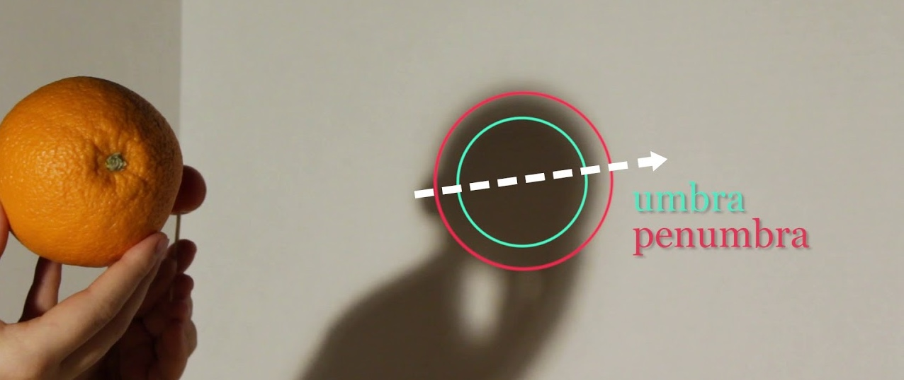

civil liberties are sometimes referred to as rights
“Congress shall make no law respecting an establishment of religion
“…or prohibiting the free exercise thereof
Louisiana recently passed a state law requiring the Ten Commandments to be displayed in all public school classrooms. Which clause of the First Amendment is implicated here?
“Congress shall make no law… abridging the freedom of speech, or of the press; or the right of the people peaceably to assemble, and to petition the Government for a redress of grievances.”
Several states and the federal government have banned acts that desecrate the U.S. flag, such as flag burning. Is such legislation constitutional?
“No person shall be held to answer for a capital, or otherwise infamous crime, unless on a presentment or indictment of a Grand Jury, except in cases arising in the land or naval forces, or in the Militia, when in actual service in time of War or public danger;
“nor shall any person be subject for the same offence to be twice put in jeopardy of life or limb;
“nor shall be compelled in any criminal case to be a witness against himself,
“nor be deprived of life, liberty, or property, without due process of law;
“nor shall private property be taken for public use, without just compensation.”

“Specific guarantees in the Bill of Rights have penumbras, formed by emanations from those guarantees that help give them life and substance” (381 U.S. 479).
“No State shall… deprive any person of life, liberty, or property, without due process of law”
A student at the University of Missouri was expelled for printing a profanity and a cartoon depicting sexual assault in the official student newspaper. Were their First Amendment rights violated?
Students at Harvard College were expelled after participating in the pro-Palestinian encampment in Harvard Yard. Were their First Amendment rights violated?
“It can hardly be argued that either students or teachers shed their constitutional rights to freedom of speech or expression at the schoolhouse gate.”
“State colleges and universities are not enclaves immune from the sweep of the First Amendment… the precedents of this Court leave no room for the view that… First Amendment protections should apply with less force on college campuses than in the community at large.”
“The college classroom with its surrounding environs is peculiarly the marketplace of ideas.”
“Mere dissemination of ideas—no matter how offensive to good taste—on a state university campus may not be shut off in the name alone of ‘conventions of decency.’”
“Above all else, the First Amendment means that the government has no power to restrict expression because of its message, its ideas, its subject matter, or its content.”
“If there is a bedrock principle underlying the First Amendment, it is that the Government may not prohibit the expression of an idea simply because society finds the idea itself offensive or disagreeable.”
Ambiguities leave room for political controversy
CSU instructors are “entitled to learn and to teach in the classroom what scholarship suggests is the truth in their particular field of expertise.”
“CSU affirms that academic freedom means that no student should be penalized because of political opinions that differ from a professor’s. Every student should feel comfortable in the right to listen critically and challenge a professor’s opinions.”